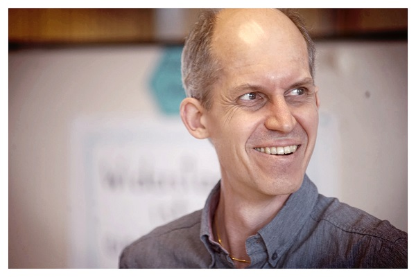

Aber bitte mit Soze
Nächste Perspektivdrehung führt uns in den Bereich der sozialen Arbeit. Ist Selbstorganisation hier ein Selbstläufer? Lernt hier der Agile-Zirkushund neue Tricks?
ReinhörenDer Aachener Podcast für Zusammenarbeit in agilen Organisationen
In dieser Folge diskutieren wir mit unserem ersten Gast Markus Rossmann, seines Zeichens Kommunikationstrainer, Scrum Master und Konsens-Moderator, die grundlegende Idee und menschliche Haltung der Gewaltfreien Kommunikation nach Marshall B. Rosenberg. Startpunkt sind die Working Agreements aus der letzten Folge, vor allem die offene Frage, wie lassen sich Konflikte mit eigenen Bedürfnissen kommunizieren bzw. wie klärt man Verstöße gegen Agreements der Gruppe ohne die große Moralkeule?
Kurz gesagt: Streiten ohne Palmenbesuch, Feedback auf Augenhöhe und gemeinsame Strategieentwicklung auf Basis eines besseren Verständnisses von dem, was mein Gegenüber braucht.
Klingt zu meta? Klingt zu kuschlig? Im Berufskontext nicht umsetzbar?
Unsere Beweisführung und Haltung gibt es in der anregenden Dreierkonferenz der heutigen Folge.
Markus Rossmann arbeitete mehr als 20 Jahre lang für Ericsson, ein Kommunikationstechnologieunternehmen, das zu den ersten Anwendern und Experiment-Laboren agiler Managementmethoden gehörte. Während der Zeit bei Ericsson arbeitete er als Software-Designer, Systemarchitekt, technischer Koordinator und Agile Product Owner.

Die erste Welle der agilen Arbeit in den 2000er Jahren inspirierte ihn für die Arbeit mit flachen Hierarchien und stärker selbstorganisierten Teams. Zur selben Zeit erblickte das Agile Manifesto das Gesicht der Welt mit einem Leitkodex an Werten für diejenigen, die Orientierung zur Anwendung agiler Methoden suchten. Markus fehlte es jedoch an konkreten Methoden, um diese Werte gemeinsam mit anderen leben zu können.
Bei dieser Reise stieß er damals zum ersten Mal auf die Gedanken von Marshall Rosenberg zur GFK. Die „Gewaltfreie Kommunkation“ (GFK) faszinierte Markus und wurde zu einem der wichtigsten Linsen, mit denen er die Welt sieht. Markus ist überzeugt von der Bedeutung dieser wertschätzenden Haltung und schlug aus diesem Grund einen neuen Weg als Kommunikationstrainer ein.
Die Gewaltfreie Kommunikation ist eine von Marshall Rosenberg entwickelter Kommunikations- und Konfliktlösungsprozess. Er unterstützt Menschen darin, mit sich selbst und anderen eine einfühlsame Verbindung einzugehen. Seine Grundannahme ist, dass alles was wir Menschen tun, von unseren Bedürfnissen geleitet wird. Manchmal wählen wir dabei Strategien, die nicht im Einklang mit den Bedürfnissen von anderen in der Gruppe stehen. So entstehen Konflikte.
Hier ist die Brücke zum Thema Working Agreements der letzten Folge. Markus beschreibt einen Ansatz zum Dialog über Regeln in einer Gruppe und die Ansprache eines Mitglieds, das gegen die vereinbarten Regeln verstoßen hat auf Basis von Gewaltfreier Kommunikation.
Gemeinsam sind wir von der Theorie in die Praxis gesprungen, haben uns mit Schäufelchen und Eimerchen bewaffnet, und in unserem Podcast-Sandkasten mit vier Leitfragen aus der GFK eine Konfliktsituation bewältigt.
Wir hoffen, dass die Folge Euch ähnlich viel Spaß macht, wie uns beim Aufnehmen.
Im positiven Fall klickt auf die Schaltfläche “Folgen”, um sicherzustellen, dass Ihr jedes Mal Bescheid kriegt, wenn wir eine neue Episode veröffentlichen. Oder erzählt anderen davon.
Oder schickt uns gleich Euer Feedback an post@dailyofthemonth.de
Völlig gewaltfrei grüßen Euch
Markus, Chris & Joshua
Agile Frameworks + development practices
Gewaltfreiekommunikation definiert
Marshall Rosenberger Gründer der Gewaltfreien Kommunikation
7. GFK-Tag in Bonn
Buchempfehlungen zu GFK von Markus Rossmann
Ergänzung für GFK Workshops: “Miteinander Reden” von Schulz von Thun
Agile Manifesto
Was ist ein Scrum Master
Wasserfallmodell für Software Projekte
Nächster Scrumtisch Aachen
Vortrag von Sebastian Dietz zu „Scrum in der Baubranche, 10.02.2020, ab 18:00 Uhr,bei der Firma Carpus & Partner, Forckenbeckstraße 61,52074 Aachen
Abstract zum Vortrag: In an increasingly dynamic and volatile environment, also the construction industry is permanently exposed to change processes. Traditional methods of project management based on the linear waterfall model are increasingly reaching their limits, which is manifested, for example, by incorrect planning, missed budgets and deadlines. The culture and thought patterns in construction projects are often characterized by distrust, conflicts and legal disputes. Particularly in the context of the increasing shortage of skilled workers, the desire for harmonious and partnership-based business relationships as well as attractive working environments in the construction industry is becoming louder. In this context, the question arises whether the application of agile methods in a process of construction planning that is fundamentally shaped by creativity and thinking in variants could provide answers to the problems described. Therefore, focus of this event are collective considerations for a possible adaptation of agile methods to the planning phase of construction projects https://www.meetup.com/de-DE/Scrumtisch-Aachen/?_locale=de-DE
Neuste Musikbeiträge von unseren Gästen und uns (Update 02/2020):
Die Musik Playlist zum Daily of the Month findet ihr auf Spotify unter:
(https://open.spotify.com/dailyofthemonth-musical-intention
-~-~-~-~-~ “Liebe Leute, bleibt gesund." -~-~-~-~-~
Nächste Perspektivdrehung führt uns in den Bereich der sozialen Arbeit. Ist Selbstorganisation hier ein Selbstläufer? Lernt hier der Agile-Zirkushund neue Tricks?
ReinhörenRechts-Links-Rechts-Rechts-Links- ...und immer schön im Flow bleiben. Wir sprechen mit Agile Coach Andreas G. Wittler über Scrum Rudiments.
ReinhörenWie sollen wir später im Beruf Selbstorganisation im Blut haben, wenn unsere Schulen das nicht intravenös injezieren? Wir sprachen dazu mit Lehrern.
ReinhörenWir sprechen mit dem Autoritätsforscher und Autor Frank H. Baumann-Habersack u.a über sein Buch ''Mit neuer Autoratität in Führung''
ReinhörenUnser zweiter Gast Peter Pröll, Coach und Moderator für Organisationsentwicklung & Agile Transformationen, stellt uns den Prinzipiensatz des BetaCodex vor.
ReinhörenWir spielen Buzzword-Bingo mit Tiefgang: Ätsch Isle, Schkramm, der Manni Festo und weitere Vokabeln erklären wir Euch einmal ganz in Ruhe.
ReinhörenWir begrüßen unseren ersten Gast und sprechen über die Haltung von Marshall Rosenberg und seinem Vorschlag einer Gewaltfreien Kommunikation
ReinhörenWas ist das? Wozu braucht man es? Wie geht das? Woran kann es scheitern? All das und mehr erfahrt ihr in einer knappen Stunde Diskussion.
ReinhörenJoshua und Chris erläutern warum und für wen wir sie unter die PodCastLer gegangen sind. Und teilen weitere Verrücktheiten rund um unseren geliebten Daily.
Reinhören